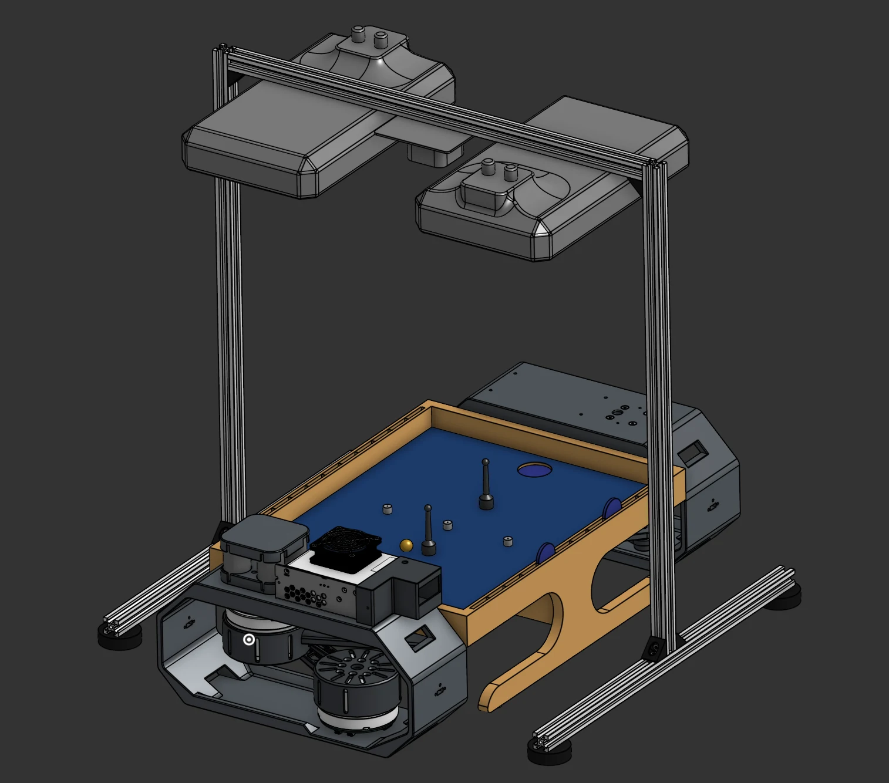
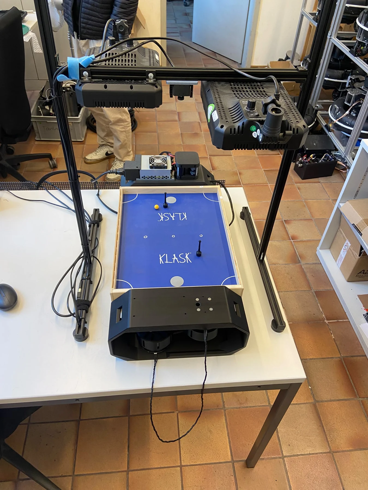
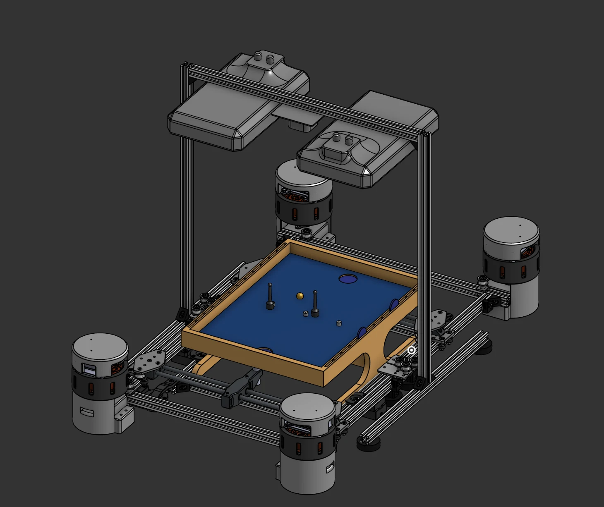
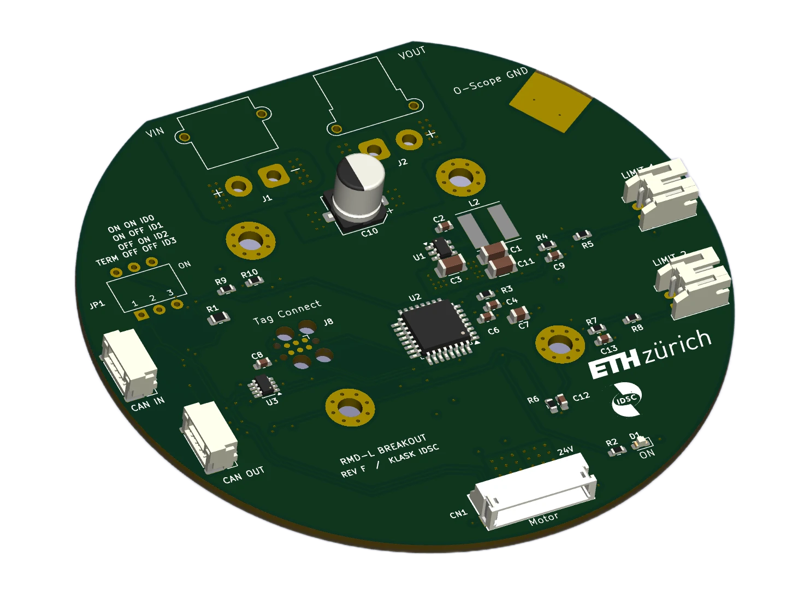
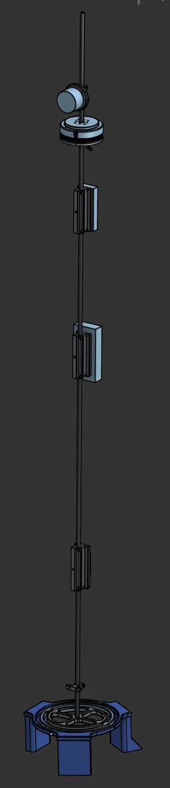
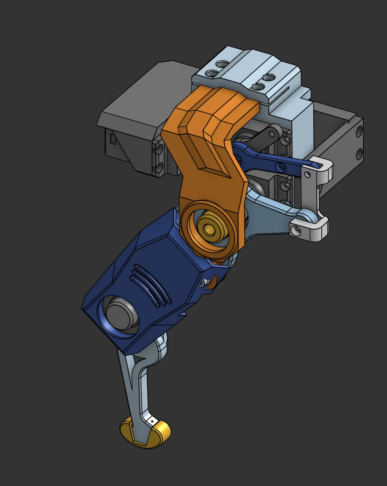
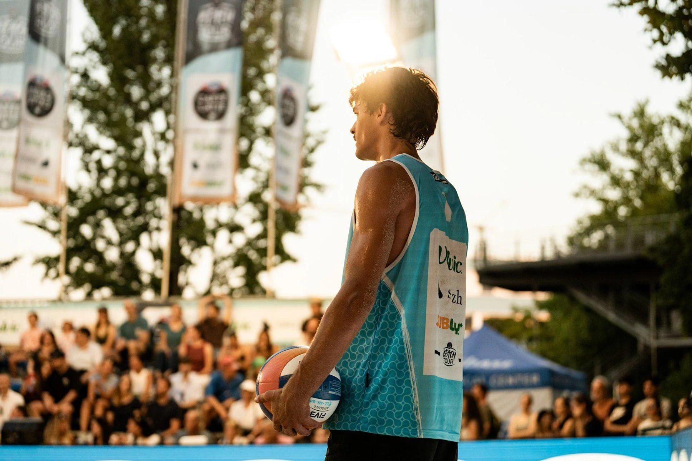

Design the whole system.
A compact mechanism still needs accessible connectors, cable clearance and serviceable joints. Bearing fits and PETG creep matter beyond the CAD model.
Curiosity in the workshop.
Commitment on the court.
From CAD and electronics to prototypes on the bench. A collection of projects, experiments and lessons learned along the way.
Explore my CV ↗

Mechanical redesign · Electronics · Control · Validation
Redesigning the existing Klasktron platform into a smaller, more affordable and easier-to-assemble research platform. A five-bar parallel linkage replaces the earlier gantry architecture, with two base-mounted direct-drive motors controlling each player mechanism.
The work brings together PETG parts, workspace analysis, a custom four-layer power/CAN PCB and experimental motion tests. Reinforcement-learning integration and competitive gameplay evaluation remain follow-on work.
Comparisons exclude camera stands from footprint and exclude power supplies, printed parts, shipping and game board from cost. These are not complete-system savings.
Motion testing reached a peak encoder-derived speed of 1.34 m/s in circular escalation. A separate circle test measured 1.55 mm radial RMS tracking error at a commanded 0.8 m/s.


Alongside the mechanical redesign, I gained experience programming STM32 microcontrollers in STM32CubeIDE and flashing firmware onto the hardware.
A compact mechanism still needs accessible connectors, cable clearance and serviceable joints. Bearing fits and PETG creep matter beyond the CAD model.
Geometry, travel, friction and mass properties must match before simulation and measured torque can be compared meaningfully.
The five-bar design required substantial tuning, debugging and repeated tests. Geometry changes needed corresponding software changes and explicit stopping behaviour.
Tracking error, encoder drift and striker motion describe different things. CAN communication errors remain unresolved; the added oscillator did not fix them.
Based on the thesis discussion and conclusion, hardware/CAD documentation, PCB documentation and workspace analysis. Learning summaries are editorial drafts for review.

LQR control · IMU feedback · ESP32
This project uses a drone motor to stabilize a rod around its unstable zero position. An inertial measurement unit (IMU) provides feedback for a linear quadratic regulator (LQR), bringing dynamic modelling and control into a physical prototype.
The work combines CAD modelling, ESP32 programming and Wi-Fi communication with controller tuning and initial hardware tests.
Deriving equations of motion (EOM) and expressing the dynamics in state-space form connected the physical system to LQR controller design.
Working with IMU feedback, tuning the controller and running initial tests showed how a theoretical design behaves on real hardware.
Early hands-on project experience brought CAD modelling, physical assembly and testing together in one system.
ESP32 programming and Wi-Fi communication added practical experience at the interface between the embedded controller and the development setup.

Mechanical design · Production · Assembly · Testing
Mechanical design, production, assembly and testing of a leg mechanism intended for integration into a robot dog. The CAD model and physical prototype connect the designed linkage geometry with the movement of the assembled mechanism.
Developing the leg involved taking a CAD mechanism through part production and assembly, connecting design decisions with the practical requirements of a physical build.
Testing the assembled leg provided hands-on experience assessing its motion before integration into a complete robot dog.
3D-printed moss poles · Production · Website design
A venture producing 3D-printed moss poles for climbing plants. I handled product development and production, website design and shop setup, packaging, shipping, branding, marketing and customer communication.
The project was discontinued because of limited time.
Turning a product idea into a manufacturable item and an online offering; managing the workflow from 3D printing to fulfilment and customer support. Running the venture also highlighted the time required to sustain both production and day-to-day operations.
Basic KiCad proficiency and PCB design; hands-on experience with CAN communication and debugging. STM32 programming in STM32CubeIDE and firmware flashing.
Inverse kinematics, Jacobians, and position and velocity control of robotic mechanisms. State-space modelling, equations of motion, LQR control and IMU feedback.
Finite element analysis (FEA) for structural integrity, eigenfrequency and eigenmode analysis.
CAD modelling, FDM 3D printing, Python, C++, ESP32 programming, Wi-Fi communication and initial hardware testing.
Credits obtained · Transcript dated 24 October 2026
Focus: Robotics, Systems and Control
Bachelor’s degree in progress
Completed courses with credits awarded, grouped as in the transcript. Grades are shown as recorded; “pass” denotes an ungraded course. Session codes: S = summer; W = the winter session ending in the stated year. The bachelor’s thesis grade is not yet recorded.
| Course | Grade | ECTS | Session |
|---|---|---|---|
| Analysis I | 5.5 | 7 | S24 |
| Mechanics I | 5.5 | 6 | S24 |
| Computer Science I | 5.75 | 4 | S24 |
| Chemistry | 5.75 | 4 | S24 |
| Course | Grade | ECTS | Session |
|---|---|---|---|
| Linear Algebra I/Linear Algebra II | 4.25 | 6 | S24 |
| Computer Science II | 5.25 | 4 | S24 |
| Analysis II | 5.75 | 7 | S24 |
| Physics | 5.75 | 5 | S24 |
| Machine Design | 5 | 5 | S24 |
| Mechanics II | 5.25 | 6 | S24 |
| Course | Grade | ECTS | Session |
|---|---|---|---|
| Engineering Design and Material Selection | 5.5 | 4 | W24 |
| Laboratory Course in Physics for Students in Mechanical Engineering | pass | 1 | S24 |
| Course | Grade | ECTS | Session |
|---|---|---|---|
| Mechanics III | 5 | 6 | W25 |
| Control Systems I | 5 | 4 | W25 |
| Thermodynamics I | 4.5 | 4 | W25 |
| Electrical Engineering I | 4.75 | 4 | W25 |
| Analysis III | 5.25 | 4 | W25 |
| Course | Grade | ECTS | Session |
|---|---|---|---|
| Thermodynamics II | 4.75 | 4 | S25 |
| Fluid Dynamics | 4.75 | 8 | S25 |
| Thermodynamics III | 5 | 3 | S25 |
| Stochastics and Machine Learning | 5 | 5 | S25 |
| Quantum Mechanics | 4.5 | 4 | S25 |
| Engineering Materials and Production | 4 | 6 | S25 |
| Course | Grade | ECTS | Session |
|---|---|---|---|
| Innovation Project | 5.25 | 3 | W25 |
| Course | Grade | ECTS | Session |
|---|---|---|---|
| Manufacturing | 5 | 4 | W26 |
| Introduction to Finite Element Analysis | 4.5 | 4 | S26 |
| Managerial Economics | 5.25 | 4 | W26 |
| Mass Transfer | 4 | 4 | W26 |
| Materials for Mechanical Engineers | 5 | 4 | S26 |
| Course | Grade | ECTS | Session |
|---|---|---|---|
| Introduction to Photonics | 5.25 | 4 | W26 |
| Manufacturing of Electronic Devices | 4.75 | 4 | W26 |
| Microrobotics | 5.5 | 4 | W26 |
| Nanorobotics | 4.75 | 4 | S26 |
| Course | Grade | ECTS | Session |
|---|---|---|---|
| Aesthetics: On the History and Theory of Beauty | 5.5 | 3 | S25 |
| Technology and Policy of Electrical Energy Storage | 4.75 | 3 | S25 |
From Auenstein to the top of Swiss beach volleyball. The seasons, the people and the work behind the results.
Sponsoring 2027 ↗
Swiss U23 champion in 2024 & 2025.
Fourth at the Elite Swiss Championships in 2026.